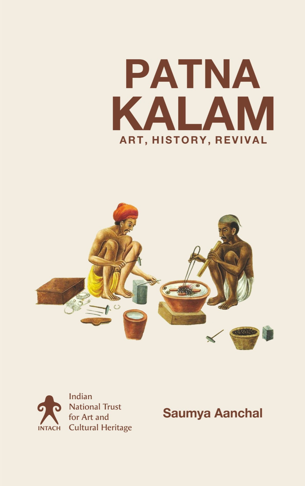

01

Authored
Patna Kalam: Art, Memory, Revival
Traces the origins, visual grammar, and master artists of one of Bihar's most distinctive painting traditions — one that turned its gaze from royalty to the lives of ordinary people. Both a scholarly record and a call to preservation, the book documents a tradition that nearly fell silent, and the effort to bring it back.